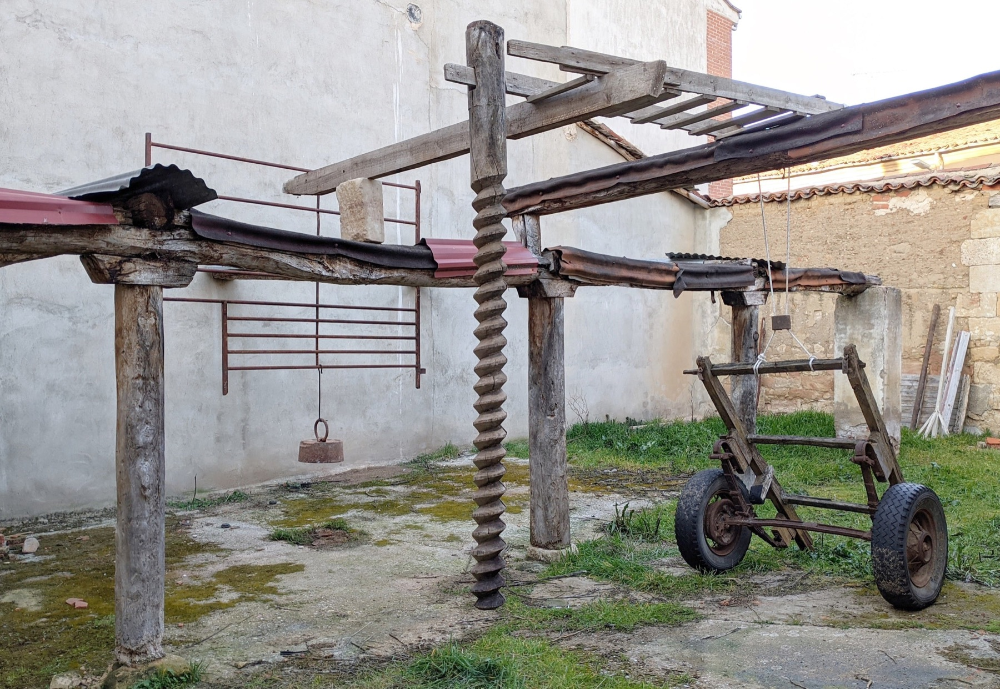
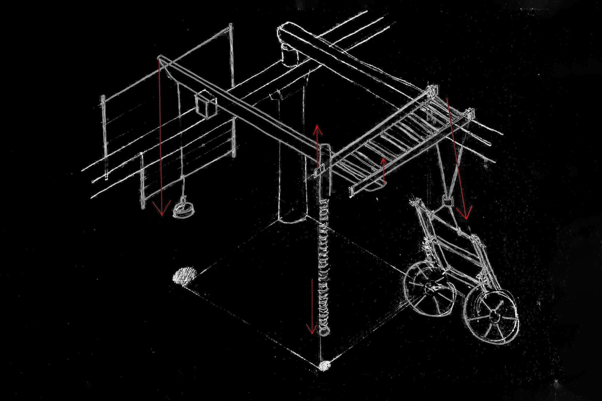

Obra2023
Columna suspendida

En casa de Miguel había un establo donde los bueyes descansaban cuando sus abuelos eran jóvenes. En su lugar quedan hoy cuatro columnas y tres vigas. Pórticos de madera que resisten como un monumento a la vida campesina.
Fuentesaúco es un pueblo de Zamora que, como muchos otros pueblos, lleva varias décadas vaciándose. Campesinos quedan pocos, ahora todos trabajan en un matadero porcino. Los días de viento sureste, el pueblo huele a su industria.
En casa de Miguel aún están los aperos que sus abuelos heredaron. Elementos que siguen siendo útiles, solo que nadie los utiliza. Un tornillo para prensar la uva, una escalera de madera, un carro de tiro, una cancela para los animales, una pesa de balanza. Retrato de la rica producción casera de entonces.
Con los aperos ampliamos la estructura fósil del establo. Levantamos dos pórticos nuevos. El orden habitual de los elementos —la vertical soporta la horizontal— se invierte. La columna cuelga ahora de las vigas, que a su vez vuelan gracias a los contrapesos. Está en calma, se encuentra en equilibrio, resiste el balanceo.
- Dimensiones
- 350 x 300 x 400 cm
- Materiales
- Madera
- Metal
- Cuerda
- Agradecimientos
- Miguel Fran
